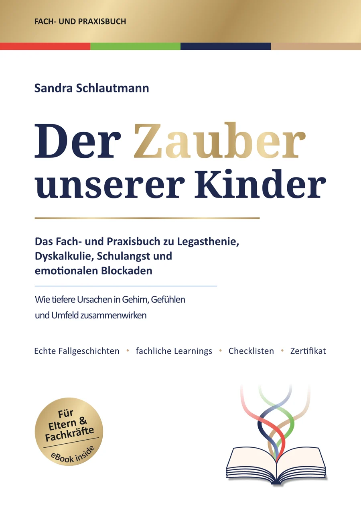
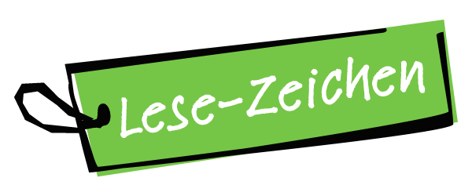

Willkommen in der Begleitwelt zum Buch.
Ein Buch darf nach der letzten Seite noch ein wenig weiteratmen. Hier finden Sie die Zugänge, Grafiken und Materialien, die aus dem Lesen ein Weiterdenken und leichteres Anwenden machen.
Die Begleitwelt
Alles, worauf das Buch weiterverweist.
Die Begleitwelt wächst und befindet sich im Aufbau.
Zwei Wege, die zum Buch dazugehören
Und wenn aus einer Buchfrage ein nächster Schritt wird?
Das Buch verbindet die Themen Lernen, Nervensystem, Gefühle und Selbstbild. Je nachdem, wo Ihre Frage gerade liegt, führen zwei Schwesterseiten weiter.

Für Kinder, Jugendliche und FamilienIm Lese-Zeichen wird aus dem Blick auf Lernwege konkrete lerntherapeutische Begleitung — mit Raum für Sicherheit, Selbstvertrauen und das Kind hinter der Schwierigkeit.Lese-Zeichen kennenlernen Für Erwachsene und ihre GeschichteBei wachgecoacht darf das, was tiefer liegt, behutsam angeschaut werden — damit die Gegenwart wieder mehr Ihnen gehört.wachgecoacht entdecken